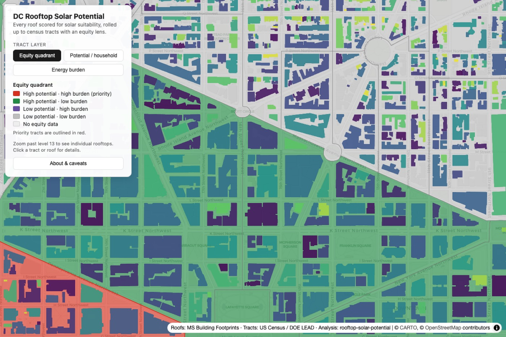

Live web mapGeoAI · Open source · SIH × ISRO
Rooftop solar potential, Washington DC
A city-scale Python pipeline that scores every rooftop in DC for solar: LiDAR surface model, GRASS r.sun radiation, RANSAC roof planes and PVWatts yield. Results roll up to census tracts with an energy-burden equity lens and ship as a public MapLibre + PMTiles web map.
- 100,064 rooftops in 66 tiles
- ~1% off Esri's Glover Park benchmark
- 165 tests, resumable GeoParquet cache
PythonLiDARGRASS GISGeoParquetMapLibrePMTiles